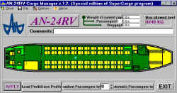

Antonov
An-24
Antonov
An-24
von RF Group
getestet von Matthias Lieberecht
Etwas Geschichte
Die An-24 wurde entwickelt, um die
Iljuschin IL-14 auf Kurzstrecken
abzulösen. Das Modell war, wie
könnte es anders sein, zuerst bei
Aeroflot ab 1963 im Linieneinsatz auf
der Strecke Moskau - Saratow. Dabei
kamen erstmals Turbinentriebwerke des
Typs Progress (Ivchenko) AI-24 zum
Einsatz, die den Komfort und die
Geschwindigkeit gegenüber der
kolbengetriebenen IL-14 deutlich
verbesserten. Die Version An-24RV
besitzt eine, für diesen Typ
ungewöhnliche Besonderheit. Zur
Steigerung der Start- und Flugleistung
wurde die rechte Triebwerksgondel
zusätzlich mit einem 900kg Schub
starken Strahltriebwerk versehen.
Dieses machte die An-24 unabhängig
von der Bodenversorgung, da es auch
zum Starten die Funktion des APU
übernahm. Als die Produktion 1972
eingestellt wurde, belief sich die
Zahl gefertigter Maschinen auf ca.
1450, von denen heute noch fast 800 im
aktiven Betrieb, vorwiegend in der
ehemaligen Sowjetunion stehen.
 Das
FS2000 Projekt
Das
FS2000 Projekt
Das Paket besteht, wie man es von
einem Set erwartet, aus dem Flugzeug
mit dazugehörigem Sound und Panel.
Enthusiasten, die sich für russische
Flusi Flugzeuge interessieren werden
feststellen, daß es sich bei diesem
Projekt um keine reine Neuentwicklung
handelt. Das Flugzeug wurde bereits
als Beta Version im Oktober 1999 von
Valentin für den FS98 angeboten und
bei dem Panel handelt es sich um das
ebenfalls für den FS98
bereitgestellte An-26 Panel von
Alexander Pogensky, der nebenbei
gesagt aktiver An-26 Pilot ist. Beides
wurde für den FS2000 angepasst. Das
gleiche gilt auch für die Sounds, die
für den FS2000 geringfügig erweitert
wurden. Eine besondere Zutat ist das
mitgelieferte Weight and Balance
Programm, mit dem es erstmals Möglich
wird, Manipulationen an der
Gewichtsauslegung des Flugzeuges
vorzunehmen.
 Nach
der Installation des Flugzeuges im
FS2000 sollte man auf jeden Fall einen
Blick in das Manual PDF File werfen.
Nicht nur dass hier alle Instrumente
sehr genau beschrieben sind, es
beinhaltet sogar ein umfangreiches
Operation Manual mit Gewichtstabelle
für die An-24 indem auch
Notfallprozeduren beschrieben sind. Am
Besten ausdrucken und immer
griffbereit haben.
Nach
der Installation des Flugzeuges im
FS2000 sollte man auf jeden Fall einen
Blick in das Manual PDF File werfen.
Nicht nur dass hier alle Instrumente
sehr genau beschrieben sind, es
beinhaltet sogar ein umfangreiches
Operation Manual mit Gewichtstabelle
für die An-24 indem auch
Notfallprozeduren beschrieben sind. Am
Besten ausdrucken und immer
griffbereit haben.
FS98-?
Nein, im FS98 ist dieses Projekt
nicht zu verwenden, denn verschiedene
Teile des Flugzeuges, Panels und
Sounds sind nur für den FS2000
geeignet. Auch das Weight and Balance
Programm lässt sich meines Wissens
nur in der neuen Flusi Version
einsetzen. Es gibt aber ein
Trostpflaster. Die bereits letztes
Jahr veröffentlichte FS98 Version ist
qualitativ ebenso hochwertig und als
erfrischende Erweiterung für den
Flusi zu sehen. Ein Download für
diese Flusi Version lohnt sich für
FS98 Nutzer allemal.
Weight
and Balance
Was für Piloten eine unablässige
Pflichtübung ist, fehlte bisher beim
Microsoft Flugsimulator. Gerade bei
diesem veränderbaren Schwerpunkt
durch Zuladung und Treibstoff hatte
Fly bisher eindeutig die Nase vorn.
Das russische Designerteam und der
Hersteller des Zusatzprogrammes,
Sergey Golovin, haben vorgemacht, daß
so etwas auch für den FS2000 möglich
ist. Wie funktioniert das denn nun?
Über das kleine Zusatzprogramm kann
der Anwender gezielt Sitzplätze des
Flugzeuges durch einfachen Mausklick
besetzen und Frachtzuladung
(Gepäckvolumen) bestimmen. Im
Hintergrund wird nach Abschluss und
Übernahme der Daten, das Flugzeug
Config Files mit diesen Gewichtsdaten
verändert. Somit ist es auch
erforderlich, das Flugzeug erneut aus
dem Menü auszuwählen, wenn es
bereits im Flusi aktiviert war.
Natürlich ist es auch möglich
einzelne Gewichte und Passagierzahlen
direkt in dafür vorgesehene Felder
einzutragen. Zusätzlich wird noch
eine Zufallsplatzierung unterstützt,
bei der sowohl Gepäck, als auch
Passagierzahl vom Computer festgelegt
werden. Für den folgenden Flug lassen
sich nun erforderliche Verbrauchsdaten
und max. Werte über die Weight and
Balance Tabellen des Operating Manuals
bestimmen. Wie sich diese Weight and
Balance Veränderungen im Flug
auswirken, werde ich bei meinen
Testflügen noch detaillierter
ermitteln.
 Die
FS2000 An-24
Die
FS2000 An-24
Die FS98 An-24 war bereits ein
hervorragendes Modell und die
Qualität wurde auch bei der
Erweiterung für den FS2000
beibehalten. Das Flugzeug ist mit
allem ausgestattet, was zu einem
zwischenzeitlich hochwertigem Flusi
Flugzeug gehört. Hier nenne ich z.B.
Moving Parts für Fahrwerk, Klappen,
sämtlichen Rudern, Landescheinwerfer
und beleuchtete Kabinenfenster. Immer
noch selten in der Flusi Welt ist das
bewegliche Bugrad was bei der An-24
realisiert wurde. Alle Teile des
Modells sind sehr gut gestaltet. Die
Räder wirken rund und sind nicht zu
dünn und der gesamte Flugzeugkorpus
besitzt nicht mehr den vom alten
Flightshop her bekannten sechseckigen
Rumpf. Eigentlich sind fast gar keine
Ecken und Kanten mehr zu erkennen.
Kurz gesagt, es macht einfach Freude
sie auch einmal von außen zu
betrachten. Das Einzige was mir nicht
gefällt sind die transparenten
Cockpitfenster, wie sie immer mehr in
Mode kommen. Betrachtet man das
Flugzeug etwas von oben, sieht man
durch die Fenster den Boden der Szenerie.
Aber das ist reine Geschmacksache und
andere lieben diesen freien Blick.
Vergleicht man nun die Vorschaubilder,
bin ich überzeugt, dass es sich bei
dem zur Verfügung gestellten Modell
erst um eine Vorversion handelt. Bei
diesen Bildern erkennt man eine
genauere Cockpitgestaltung mit Pilot
und Copilot und da dies bei dem Modell
noch fehlt wird es sicherlich noch
einmal ein Update geben. Und wenn
nicht, die An-24 sieht trotzdem
äußerst gelungen aus.
 Das
Panel
Das
Panel
Nachdem nun das erste Update
(Bugfix) erschienen ist, ist das Panel
der englischen Version ebenfalls voll
funktionsfähig und wird fehlerfrei
wiedergegeben. Wie oben bereits
erwähnt, handelt es sich um die
überarbeitete Version des bereits
für den FS98 angebotenen An-26
Panels. Man erkennt das auch, wenn man
einen Blick in die Panel.cfg wirft,
die noch das Layout des FS98 besitzt.
Leider hat sich hier ein Schritt
zurück ergeben, da die Ausstattung
der FS98 Version etwas reichhaltiger
war (z.B. Wetterradar oder weitere
Warnanzeigen). Dies liegt sicherlich
daran, dass zur Zeit noch nicht alle
Gauges des FS98 vollständig im FS2000
verwendbar sind und Microsoft erst
heute SDK veröffentlicht hat. Ich bin
mir aber sicher, dass es nicht lange
dauern wird bis das Panel mindestens
die gleiche Ausstattung wie in der
Vorgängerversion besitzt. Nimmt man
das oben bereits erwähnte Operating
Manual zur Hand, fällt einem auf, dass
der hierin beschriebene Autopilot
fehlt. Da dieser in der Anleitung
recht genau beschrieben ist, bestärkt
mich das wieder in der Annahme, dass
es sich bei dem Set noch um eine
Vorversion handelt. Ich betrachte im
Folgenden die derzeit fertige Version.
 Der
erste Eindruck des Panels ist
hervorragend. Man hat sofort das
"drin sein" Gefühl und der
Pilot sitzt an der richtigen Stelle.
Die Grafik des Panelbitmaps lässt
keine Wünsche offen und sämtliche
gezeichneten Elemete wirken
realistisch und dreidimensional.
Verglichen mit einem Foto des realen
An-24 Cockpits sind alle Instrumente
an der richtigen Stelle platziert.
Leider sind Airspeed, Vertical Speed
und Altimeter nicht metrisch wie im
realen Modell. Da aber das Operating
Manual metrische Instrumente
beschreibt, bin ich mir auch hier
eines Updates zur endgültigen Version
sicher. Grund hierfür ist sicherlich
wieder die Inkompatibilität zum FS98,
was ich bei den von mir eingesetzten
metrischen Gauges in meinen russischen
Panels leider auch feststellen musste.
Dem Einen oder Anderen wird die
Funktionsweise des künstlichen
Horizontes aufgefallen sein. Dies ist
kein Fehler sondern spiegelt genau das
Original wieder. Bei allen russische
Attitudes bewegt sich der Horizont nur
vertical, während die Horizontnadel
den Neigungswinkel in Querrichtung
angibt.
Der
erste Eindruck des Panels ist
hervorragend. Man hat sofort das
"drin sein" Gefühl und der
Pilot sitzt an der richtigen Stelle.
Die Grafik des Panelbitmaps lässt
keine Wünsche offen und sämtliche
gezeichneten Elemete wirken
realistisch und dreidimensional.
Verglichen mit einem Foto des realen
An-24 Cockpits sind alle Instrumente
an der richtigen Stelle platziert.
Leider sind Airspeed, Vertical Speed
und Altimeter nicht metrisch wie im
realen Modell. Da aber das Operating
Manual metrische Instrumente
beschreibt, bin ich mir auch hier
eines Updates zur endgültigen Version
sicher. Grund hierfür ist sicherlich
wieder die Inkompatibilität zum FS98,
was ich bei den von mir eingesetzten
metrischen Gauges in meinen russischen
Panels leider auch feststellen musste.
Dem Einen oder Anderen wird die
Funktionsweise des künstlichen
Horizontes aufgefallen sein. Dies ist
kein Fehler sondern spiegelt genau das
Original wieder. Bei allen russische
Attitudes bewegt sich der Horizont nur
vertical, während die Horizontnadel
den Neigungswinkel in Querrichtung
angibt.
 Flugeigenschaften
der An-24
Flugeigenschaften
der An-24
Um die Weight and Balance
Veränderungen am Besten testen zu
können, unternahm ich die selbe
Vorgehensweise wie bereits bei meinem
Fly Test. Bei meinem ersten Start
verteilte ich die Zuladung
vollständig links vorn, womit der
Schwerpunkt komplett aus der Mitte
verschoben wurde. Bereits nach einigen
Metern zog die Maschine nach links ab
und ich musste mit dem Seitenruder
gegensteuern. Zum Vergleichen belud
ich beim zweiten Start die Maschine
korrekt. Hier war keinerlei Ausbrechen
der An-24 festzustellen. Bei zwei
weiteren Versuchen untersuchte ich die
Startstrecke mit unterschiedlicher
Beladung. Tatsächlich kommt die An-24
mit weniger Gewicht schneller auf
Touren, womit sich die Startstrecke
verkürzt. Ohne Passagiere und
Zuladung bemerkt man im Steigflug auch
geringfügig den nach vorne
gewanderten Schwerpunkt. Die Nase
drückt stärker nach unten, was durch
Trimmen ausgeglichen werden muss.
Trotzdem kam es bei keinem Versuch zu
einem Strömungsabriss.
 Das
generelle Flugverhalten der An-24 ist
einwandfrei. Hier macht Handarbeit
ohne Autopilot wieder richtig Spaß,
da sich die Mschine sehr schön
austrimmen lässt, ein gutmütiges
Flugverhalten besitzt und auch im
Landeanflug und bei der Landung sauber
zu steuern ist. In vielen Köpfen
herrscht immer noch die Meinung vor, dass
russische Flugzeuge nur schwer zu
bändigen sind. Dies ist falsch.
Gerade Modelle wie die An-24, Yak-40
und Yak-42, aber auch größere
Maschinen wie IL-86 und IL-96 genießen
sogar den Ruf eines besonders
gutmütigen Verhaltens. Valentin hat
diese Eigenschaften unter Zuhilfenahme
eines realen An-26 Piloten
hervorragend umgesetzt.
Das
generelle Flugverhalten der An-24 ist
einwandfrei. Hier macht Handarbeit
ohne Autopilot wieder richtig Spaß,
da sich die Mschine sehr schön
austrimmen lässt, ein gutmütiges
Flugverhalten besitzt und auch im
Landeanflug und bei der Landung sauber
zu steuern ist. In vielen Köpfen
herrscht immer noch die Meinung vor, dass
russische Flugzeuge nur schwer zu
bändigen sind. Dies ist falsch.
Gerade Modelle wie die An-24, Yak-40
und Yak-42, aber auch größere
Maschinen wie IL-86 und IL-96 genießen
sogar den Ruf eines besonders
gutmütigen Verhaltens. Valentin hat
diese Eigenschaften unter Zuhilfenahme
eines realen An-26 Piloten
hervorragend umgesetzt.
Zusammenfassung
Auch wenn ich in verschiedenen
Bereichen darauf hingewiesen habe, dass
es sich hierbei um eine Vorabversion
handelt, lohnt der Download dieses
Sets auf jeden Fall. Hier wurde
umgesetzt, was der FS2000 zu bieten
hat. Als richtungsweisend betrachte
ich das kleine Programm zur
Manipulation der Gewichtsverteilung
und zur Regelung der Zuladung von
Gepäck und Passagieren. Hier wurde
von einem Freeware Designer Fly's
Vorsprung zunichte gemacht. Wäre
dieses Paket ein Payware Paket, wäre
mein Schluss-Satz wohl gewesen, dass
sich die Anschaffung auf jeden Fall
lohnt. So kann ich abschließend nur
sagen: "selbst schuld wer es
sicht entgehen lässt".
Matthias Lieberecht
Lieberecht@cw-net.de
15.Februar 2000


{kind=link}
{kind=link}